1简介与目标
La Fleur（繁花）是一款策略桌游。你扮演一位法国洛可可时代的花园爱好者，建造你的城堡、举办花园派对、积累足够的声望，成为所有花园中最伟大的存在——盛大晚会（Grande Soirée）的主人！
每位玩家从几个角色中选择一个开始游戏，每个角色拥有不同的城堡——但这些城堡起手都颇为朴素空旷（嗯……就是又朴素又空旷）。你将吸引访客来到你的城堡，建立你的声誉：没有喷泉可欣赏、没有小径可漫步、最重要的是——没有花朵？那可不行！
每回合，你要派遣工匠（Artisan）前往巴黎各处获取花卉之美、雇佣额外帮手、赚取金币、委托新的花园景观……但资源有限，每个地点的顶尖工匠只有一位。快！每回合结束时都会举办花园派对，来自全球各地的访客带着声望和机遇蜂拥而至。小心你的邻居——有些访客可能更愿意去他们的派对而不是你的！Sacrébleu！（天哪！）
随着你城堡的美名传开，越来越多的访客会涌向你的花园。当一名玩家获得足够多的声望时，所有玩家根据各自的目标（花园景观、花牌和金币）计分。声望最高的玩家被宣布为盛大晚会的主人！
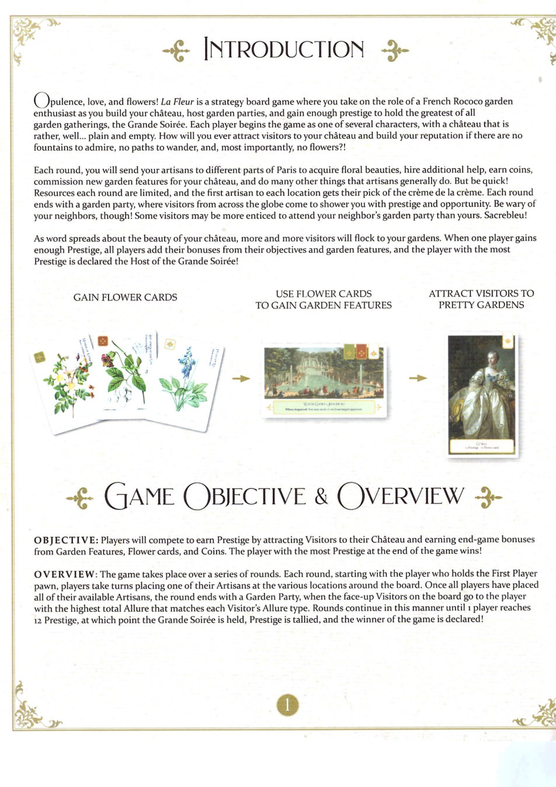
游戏目标与概览
目标：玩家通过吸引访客到自己的城堡并赚取终局奖励来竞争声望，奖励来源包括花园景观、花牌和金币。声望最高的玩家获胜！
概览：游戏由一系列回合组成。每回合以持有起始玩家标记的玩家开始，玩家轮流在游戏板上的各个位置放置工匠并执行相应行动。当所有玩家都放完可用工匠后，回合以花园派对结束——面板上的面朝上访客移动到总魅力值匹配且最高的玩家城堡处。游戏持续进行，直到某位玩家达到 12 点声望，此时举行盛大晚会，宣布胜者！
2游戏组件
包含巴黎地图及各类区域
每位玩家一块，含魅力追踪条
含角色能力描述
可购买的花园建筑/装饰
吸引到城堡的贵宾
用于购买花园景观的资源
可雇佣的工匠
每回合触发的事件效果
通用货币
代表工匠
追踪各类型魅力值
追踪声望得分
标识当前起始玩家
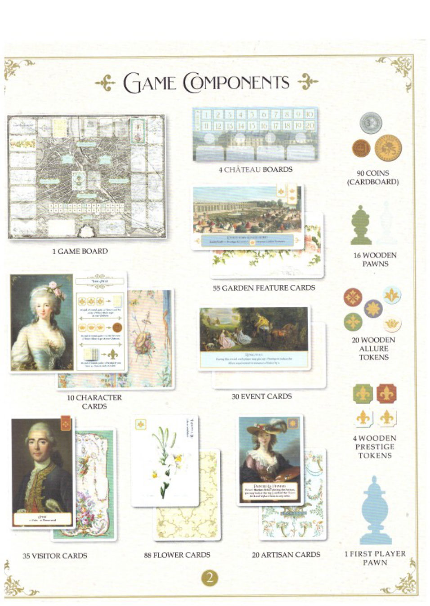
3游戏板设置
- 主板：将游戏主板放在桌子中央，确保为每位玩家的城堡板和花园区域留出足够空间。
- 花园景观卡：洗匀花园景观牌堆，正面朝下放在游戏板上。
- 花牌：洗匀花牌牌堆，正面朝下放在游戏板上。
- 访客卡：洗匀访客牌堆，正面朝下放在游戏板上。
- 工匠卡：洗匀工匠牌堆，正面朝下放在游戏板上。
- 事件卡：洗匀事件牌堆，正面朝下放在游戏板上。
- 剩余米宝和金币：将剩余的米宝和金币放在所有玩家都能拿到的地方。
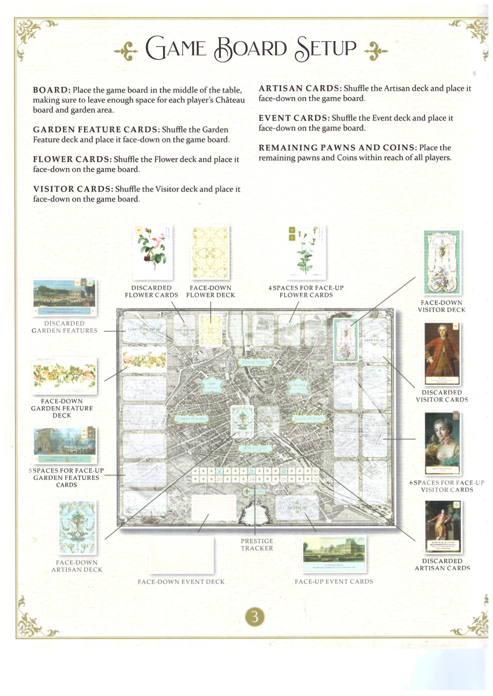
4玩家设置
每位玩家领取以下组件，摆在自己面前的游戏区域内：
- 1 块城堡板：放在面前。城堡板旁边的区域是你的花园景观区。
- 1 张角色卡 + 2 张工匠卡：角色和工匠协同工作帮助建造城堡。给每位玩家发 2 张角色卡，再从工匠牌堆给每位玩家发 3 张工匠卡。每位玩家从角色卡中选 1 张，放到城堡板的左侧；再从工匠卡中选 2 张，分别放到城堡板的第一个和第二个工匠空间。其余未使用的角色卡和工匠卡放回对应牌堆。
- 1 个声望标记：取 1 枚自己颜色的声望标记，放在游戏板上的声望追踪条起点。
- 4 个米宝：取 4 个自己颜色的米宝。前两个分别放在城堡板的第一和第二个工匠空间。剩余 2 个放在城堡板旁边备用。
- 5 个魅力追踪标记：取每种颜色各 1 个魅力标记（共 5 个），放在城堡板旁边。
- 3 枚金币：从供应区取 3 枚金币，放在城堡板旁边。金币用于整局游戏中购买花牌、雇佣额外工匠等。
- 3 张花牌：从花牌堆随机发 3 张给每位玩家。将手牌收好，不要展示给其他玩家看。
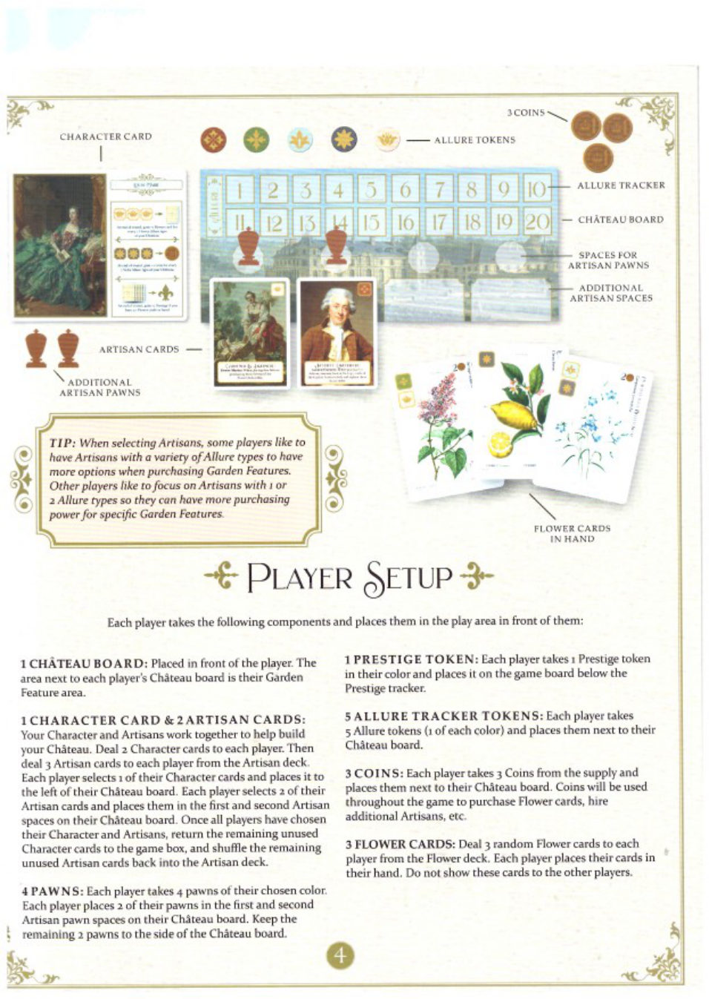
5声望获取方式
声望是评判谁配得上"盛大晚会主人"称号的核心指标。以下是游戏中获取声望的各种途径：
- 访客（Visitors）：某些访客在花园派对阶段访问你的城堡时会给予声望。
- 声望位置（Prestige Location）：每回合一次，可以在声望位置放置 1 名工匠来获取显示的声望值。
- 花园景观能力：部分花园景观在被购入、被访问、回合末或游戏结束时满足条件会给予声望。
- 金币（Coins）：游戏结束时，根据手中剩余的金币数量计算声望。
- 花牌（Flower Cards）：游戏结束时，根据手中持有的花牌数量计算声望。
获取声望的方法：在声望追踪条上将声望标记向前移动等于所获声望值的格数。
魅力类型（Allure Types）
游戏中共有 6 种魅力类型，这些符号代表花园的不同方面，出现在各种卡牌上：
- 花园景观卡：显示购买该景观所需的花牌魅力类型和数量，以及你城堡的总魅力值要求（见第 10 页）。
- 访客卡：显示该访客在花园派对阶段被吸引到你城堡所需的魅力类型（见第 14 页）。
- 工匠卡：显示该工匠每回合可为购买花园景观贡献的魅力类型（见第 11 页）。
- 花牌：显示该花牌可为购买花园景观贡献的魅力类型（见第 10 页）。
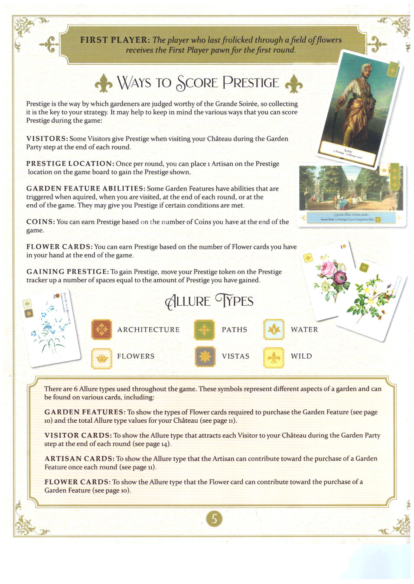
6进行一回合
每回合按以下顺序依次执行四个阶段：
- 回合开始（Start of Round）：玩家抽牌补满面板上的面朝上花牌、花园景观、事件和访客空位。
- 放置工匠（Placing Artisans）：从持有起始玩家标记的玩家开始，玩家轮流在游戏板上的各个位置放置 1 名工匠并执行其行动，每人一轮。
- 花园派对（Garden Party）：当所有玩家都放完了所有可用工匠后，回合进入花园派对阶段。面板上面朝上的访客移动到总魅力值匹配且最高的玩家城堡处。
- 回合结束（End of Round）：每位玩家将自己工匠米宝收回城堡板；将来到自己花园派对的访客（同伴除外）移至访客弃牌堆。起始玩家标记顺时针传给下一位玩家，然后进入下一回合。
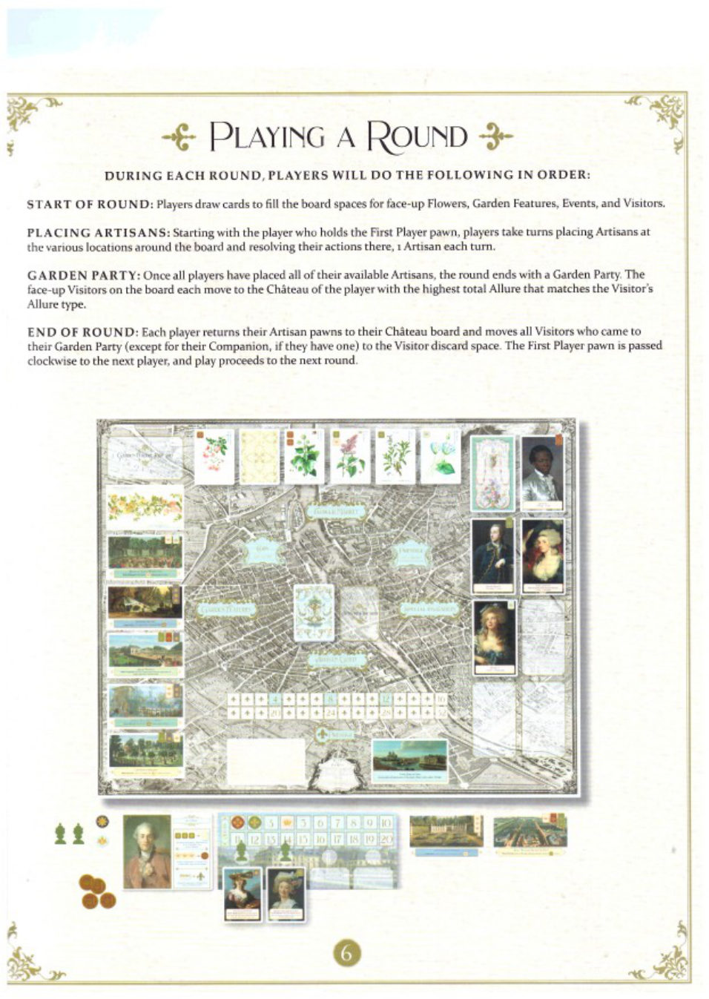
7回合开始
每回合开始时依次执行以下操作：
1. 花牌
抽牌并将 1 张花牌正面朝上放入游戏板上每个空的花牌空间。
2. 花园景观卡
抽牌并将 1 张花园景观卡正面朝上放入游戏板上每个空的花园景观空间。
3. 访客卡
随着你美丽花园的名声传开，越来越多访客会来参加你的花园派对。游戏板上的声望追踪条有 3 个指定位置（分别在 4、8 和 12 声望处），标示着每回合新增多少访客。按以下规则抽取新访客卡：
- 首先翻开等于玩家人数的访客卡，正面朝上放入空的访客卡空间。2 人游戏翻 2 张，3 人游戏翻 3 张，4 人游戏翻 4 张。
- 接下来，对 4、8 和 12 声望处的每个已到达或被跳过的指定空间，额外翻 1 张访客卡。（无论有多少玩家到达或跳过该位置，每个空间只额外翻 1 张。）
示例：Ronan、Poppy 和 Amy 在玩 3 人游戏。Ronan 以 8 声望领先。回合开始时，玩家们翻出 5 张总访客卡（3 张基础 + 2 张额外，因为有人达到/跳过了 4 声望和 8 声望），放入空的访客卡空间。
部分卡牌和游戏效果可能允许抽取额外的访客。如果所有可用访客空间都已填满，将额外访客放在访客空间的旁边。
4. 事件卡
从第二回合起直到游戏结束，每回合从事件牌堆顶端抽 1 张事件卡，正面朝上放入事件弃牌堆。（第一回合不抽事件卡！）部分事件卡的效果立即生效，部分在整个回合期间持续生效，部分在回合末生效。按照事件卡上的指示来结算效果。
A. 标题（Title）：事件的名称。
B. 效果（Effect）：每位玩家必须/可以执行的效果，可能在回合开始时、回合中或回合结束时触发。
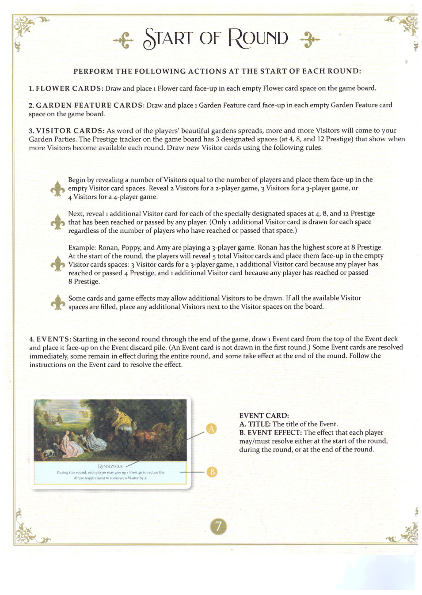
8工匠放置
一旦"回合开始"步骤完成，玩家开始放置工匠。从持有起始玩家标记的玩家开始，按顺时针顺序轮流在游戏板上的各个位置放置 1 名工匠。如果某玩家没有可用的工匠位置了（即其城堡板上已无空余工匠位），则跳过该玩家，继续下一位，直到所有人都放完了所有工匠。
如何使用工匠
每位玩家开局拥有 2 名工匠，游戏过程中可通过工匠行会额外雇佣最多 2 名（见第 12 页）。
放置工匠
每名正在为你工作的工匠由你城堡板上对应的卡牌及其同名米宝代表。当你把米宝放到游戏板上的某个位置时，就相当于派遣该工匠去那个位置执行行动。
取走你选择要雇佣的那位工匠的米宝，放到你想访问的游戏板位置上。
每名工匠每回合只能使用一次（除非某个事件或其他效果另有规定）。
工匠能力
任何工匠都可以放在任意位置上。然而，每名工匠都有独特的能力，对应特定位置。如果你将自己的工匠放在与其能力对应的位置上，就可以激活该工匠的能力。
A. 魅力类型（Allure Type）：该工匠可用于购买花园景观的魅力类型，每回合使用一次。
B. 职业（Occupation）：工匠的专业特长。
C. 能力位置（Ability Location）：该工匠的能力可在哪个位置激活。
D. 能力（Ability）：当该工匠的米宝放在其能力位置时激活的效果。
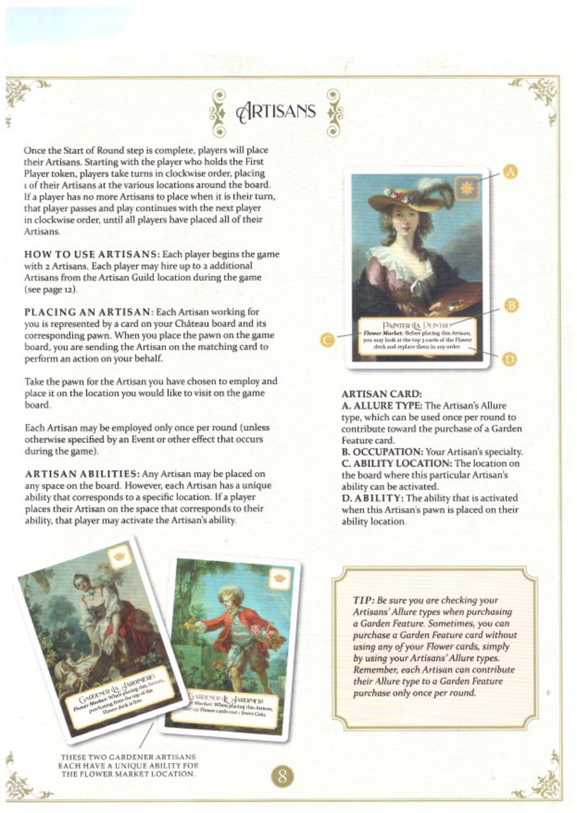
9地点说明
游戏板上有 6 个位置可供玩家放置工匠：
购买花牌，用于购买花园景观。
获得 +1 声望。
发送特别邀请函给访客，邀请其参加你的花园派对（或在平局时使其成为你的同伴）。
雇佣额外工匠或替换现有工匠。
使用花牌和工匠的魅力类型购买花园景观，增加城堡的总魅力值并在每回合结束时吸引访客。
获得 +2 金币。
花市（Flower Market）
将工匠米宝放在花市位置来购买 1 张花牌。玩家可以选择购买列表中的任意花牌（即按卡上所标价格购买——Wild 牌标 1 枚金币）。如果一张花牌没有标价，则购买价格为 0 枚金币。或者，玩家也可以支付 1 枚金币从花牌堆顶端购买一张面朝下的花牌。购买花牌所用的金币放入供应区。
每位工匠每回合只能购买 1 张花牌（除非有工匠能力、事件等特殊效果允许更多）。购买的花牌放入玩家手牌（记住：面朝上的花牌不会在新回合前被刷新，除非游戏中有某种效果导致提前刷新）。
1. 有 2 种魅力类型的花牌花费 2 枚金币。
2. Wild 牌花费 1 枚金币。
3. 只有 1 种魅力类型的花牌花费 0 枚金币。
4. 从牌堆顶端抽取的面朝下花牌花费 1 枚金币。
A. 魅力类型（Allure Type(s)）：该花牌可用于购买花园景观的魅力类型。
B. 费用（Cost）：购买该花牌所需金币数。
C. 花名（Flower Name）：该花的通用名和学名。
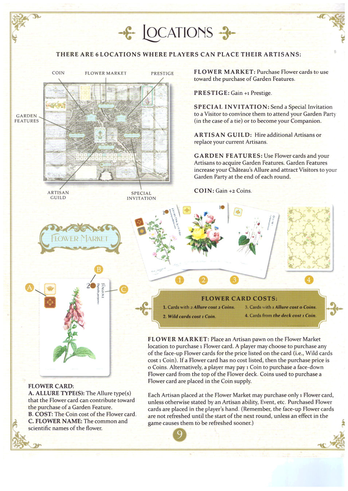
10花园景观
将工匠米宝放在花园景观位置来购买 1 张面朝上的花园景观卡。花园景观的购买价格由卡牌右上角的魅力符号的种类和数量决定。
如果在购买花园景观之前有空闲的花园景观空间，玩家可以支付 1 枚金币到供应区，从花园景观牌堆抽取 1 张花园景观卡，正面朝上放入空闲的花园景观空间。只要还有空闲的花园景观空间，此操作可以重复多次。
购买花园景观
花园景观可以使用任何组合的花牌和工匠卡来购买，只要这些卡牌的魅力类型总和覆盖了花园景观卡上要求的全部魅力类型。
1. 使用花牌
如果你的手牌中有魅力类型符合要求的花牌，它们可以为购买花园景观做贡献：
- 如果一张弃掉的花牌有超过 1 种魅力类型，且这几种类型都是花园景观所需要的，那么这张单张花牌可以同时支付两种所需的魅力类型。
- 然而，如果一张有超过 1 种魅力类型的花牌被弃掉，而花园景观只需要其中 1 种类型，那么多余的那种魅力类型不会被使用，视为浪费。
- Wild 牌 🍃可以作为花园景观所需的任何 1 种魅力类型使用。
- 玩家可以弃掉任意 2 张花牌（无论其魅力类型如何）来当作花园景观所需的任意 1 种魅力类型。
2. 使用工匠卡
每位玩家的工匠每回合可以为购买 1 张花园景观贡献 1 次其魅力类型。工匠的米宝不需要在花园景观位置或玩家的城堡板上——玩家只需声明他们正在用该工匠的魅力类型来参与本次购买即可。将参与购买的工匠卡以约 45 度角倾斜放置，表明该工匠本轮已贡献了魅力。
注意：工匠的魅力类型不计入你城堡的总魅力值。
更新魅力追踪条
一旦支付了购买所需的费用，将花园景观卡放入你的游戏区域。在你城堡板的魅力追踪条上，将与购买的花园景观卡上每种魅力符号相匹配的魅力标记向前推进相应的格数。
购买示例
凉亭（Pavilion）花园景观的费用如下。你能使用的最可行的花牌组合是：双粉红苏格兰野蔷薇（Double Pink Scotch Briar Rose）贡献 1 个 🖼️ 景致 + 1 个 🏛️ 建筑魅力；Wild 牌贡献 1 个 🛤️ 小径魅力；常春藤（Common Ivy）贡献第二个所需的 🏛️ 建筑魅力，而常春藤上多余的 🏛️ 建筑魅力则浪费掉。
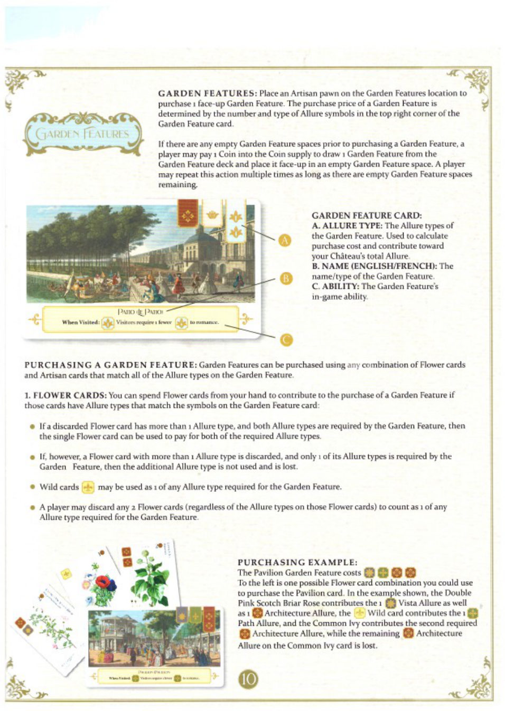
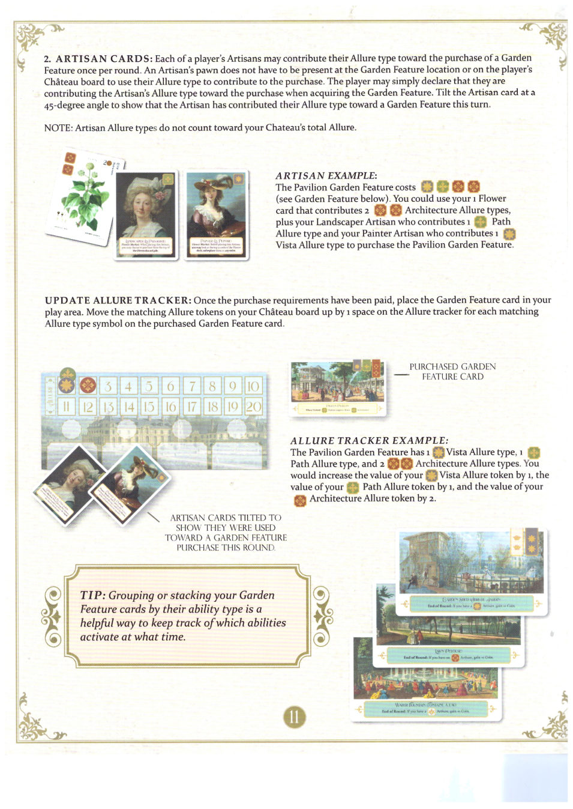
花园景观能力类型
每张花园景观卡拥有以下 4 种能力类型之一，在满足触发条件时按卡牌指示结算：
购买花园景观卡时立即结算该能力文本。
每回合花园派对步骤中当你可能收到访客时结算该效果。
每回合"回合结束"步骤时结算该效果。
游戏结束时，计分阶段结算该效果。
工匠行会（Artisan Guild）
将工匠米宝放在工匠行会位置来雇佣 1 名新工匠或抽取 1 张新工匠卡替换现有工匠。
雇佣新工匠：如果你拥有的工匠少于 4 名，向供应区支付 8 枚金币，从工匠牌堆顶端抽取 1 张工匠卡。将工匠卡正面朝上放在你城堡板的一个空余工匠空间上方。取 1 个该工匠颜色的米宝放在新工匠卡的空余米宝空间中。你可以在本回合的下一轮开始使用这名新工匠。
替换工匠：向供应区支付 4 枚金币，从工匠牌堆顶端抽取 1 张工匠卡。你可以保留新的工匠卡或将其弃掉。如果你想保留当前城堡板上的旧工匠，则将新抽到的工匠卡放到旧工匠卡之前占据的空间上（即原来被弃掉的工匠卡所在的位置）。
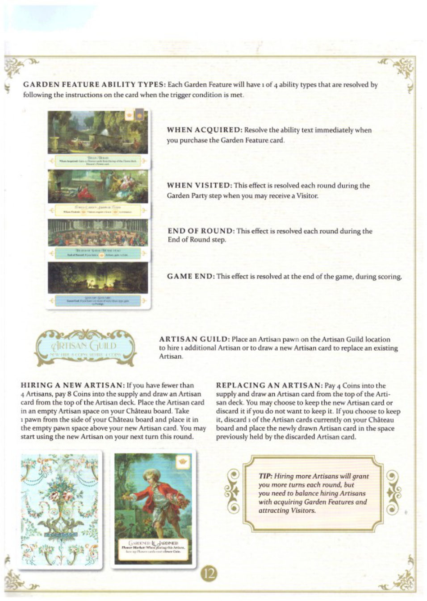
11特别邀请
在花园派对步骤中，访客通常会访问总魅力值最高且匹配其魅力类型的玩家城堡（见第 14 页）。将工匠米宝放在特别邀请位置来邀请一名特定访客参加你的花园派对，或让一名访客成为你的同伴（Companion）。
每张访客卡上只能放置 1 个米宝。除非游戏中有明确说明，否则任何能力或其他效果都不能从访客区域弃掉带有米宝的访客卡。
A. 魅力类型（Allure Type(s)）：该访客被吸引到的魅力类型。
B. 姓名（Name）：访客的虚构姓名。
C. 效果（Effect）：在花园派对步骤中获得的效果。
邀请访客
如果你与另一名玩家在匹配某访客魅力类型的数值上打平，你可以在特别邀请位置放置工匠来打破平局，让该访客访问你的城堡而非对手的。但要谨慎——如果你的对手在该访客的魅力类型上比你更高，那么在花园派对步骤中，该访客会忽略你的邀请而去访问对手的城堡！
要邀请一名访客，取你在特别邀请位置放置的工匠米宝，放到你想邀请的访客卡上。
浪漫同伴
如果你的城堡有 5 个或更多匹配某访客魅力类型的魅力值，你可以浪漫该访客并使其成为你的同伴。要浪漫一名访客，将你在特别邀请位置放置的工匠米宝放到你想浪漫的访客卡上。如果该访客在你的花园派对步骤中访问了你的城堡，该访客将变成你的同伴卡。同伴不是返回到访客弃牌堆，而是留在你的城堡并在每回合结束时赋予你效果。每位玩家最多只能拥有 1 名同伴。没有足够魅力值的玩家无法使访客成为同伴。
将工匠放在声望位置获得 +1 声望。每位玩家每回合在此位置只能放置 1 次。
将工匠放在金币位置获得 +2 金币。从供应区取金币放入自己的游戏区域。
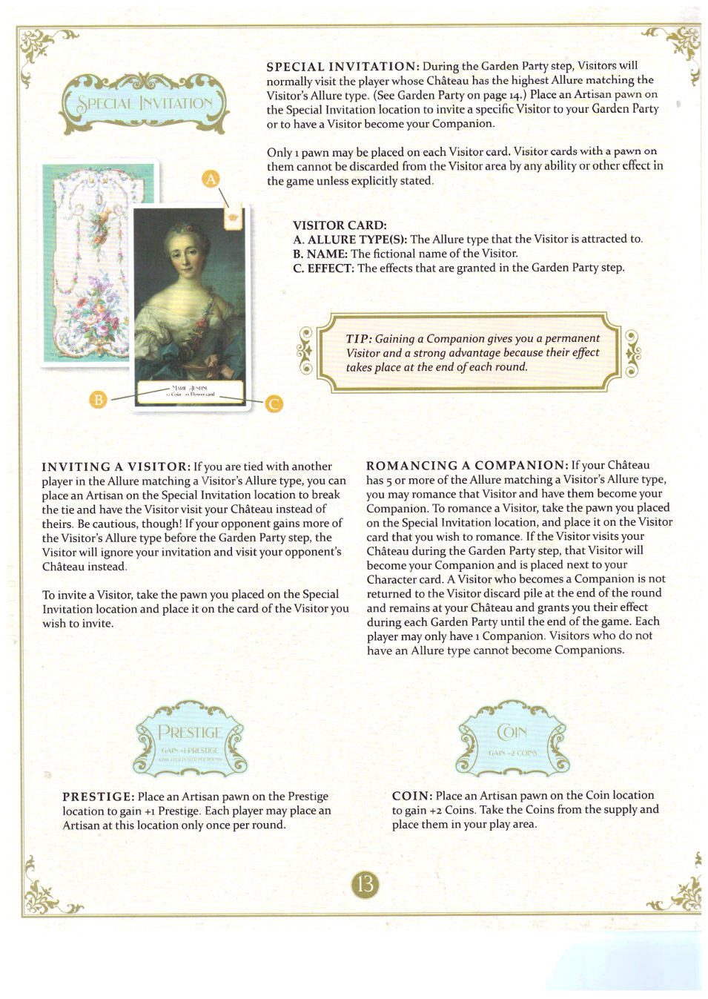
12花园派对
当所有玩家都放完了所有可用工匠后，花园派对步骤开始。面板上面朝上的访客卡会访问总魅力值最高且匹配访客魅力类型的玩家城堡，然后移动到该玩家的游戏区域。如果多名玩家并列最高，则该访客无法决定去谁的城堡（见第 13 页"特别邀请"中关于打破平局的说明）。一名玩家在一次花园派对中可以接收的访客数量没有上限。
访客
一旦所有面朝上的访客卡都被移动到了玩家的游戏区域（平局时或留在访客区域），从持有起始玩家标记的玩家开始，按回合顺序依次处理每位玩家的访客。对于每位玩家，可以任意选择顺序，依次结算其访客卡（包括同伴卡，如果有）上的效果文本。
访客效果
按照访客卡上的文字说明来结算效果。如果访客指示玩家获得 +1 或更多花牌，这些花牌可以从花牌堆顶端免费抽取或从面朝上的花牌中以零成本获取。
"被访问时"能力
如果你拥有带"被访问时（When Visited）"能力的花园景观卡，在此时结算该能力。你的同伴也作为访客计入，目的是触发和结算花园景观能力。
访客回收（Au Revoir）
一旦所有玩家都结算完了各自游戏区域内的访客卡文本，将所有访客卡（同伴除外）以及仍留在游戏板访客区域的面朝上访客卡移至访客弃牌堆。
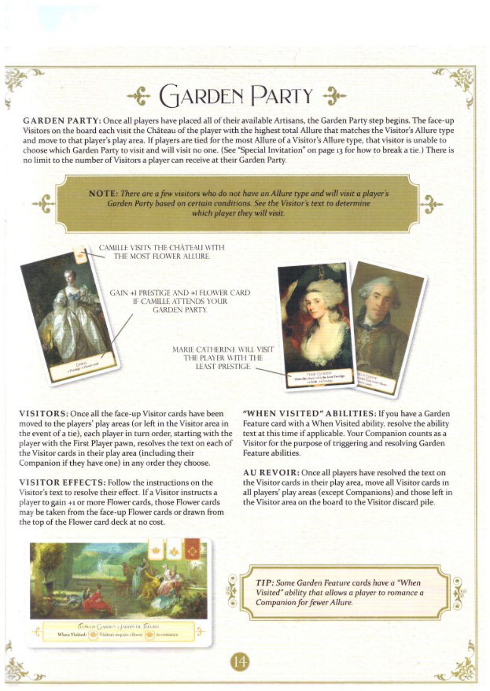
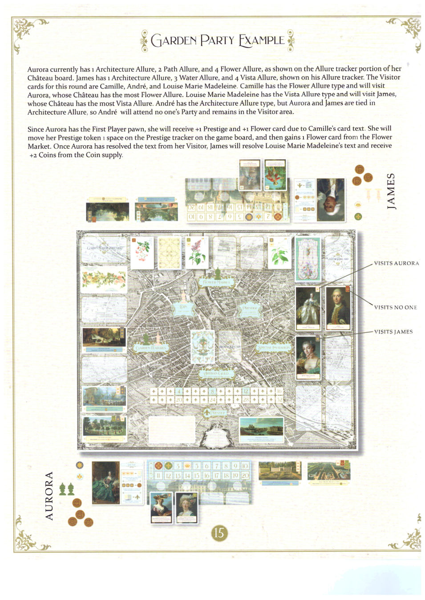
13回合结束
一旦花园派对步骤完成，每位玩家需要结算自己角色卡和花园景观卡上的"回合末"效果。然后所有玩家整理游戏板和城堡板，准备下一回合。
操作清单
- 弃置面朝上的访客：将仍在访客区域的所有面朝上访客卡移至访客弃牌堆。
- 回收工匠米宝：从游戏板取回你的工匠米宝，放回城堡板上的工匠空间。
- 传递起始玩家标记：将起始玩家标记传给顺时针方向的下一位玩家。
- 花园景观"回合末"能力：从持有起始玩家标记的玩家开始，按顺序依次结算每位玩家拥有的任意花园景观卡的"回合末"能力文本。
- 角色能力：同样从持有起始玩家标记的玩家开始，按顺序依次结算每位玩家角色卡上的"回合末"能力文本。
- 重置工匠：重置所有参与了花园景观购买的工匠卡，将它们恢复为垂直状态（不再倾斜）。
- 检查盛大晚会：如果没有玩家达到 12 或更多声望，下一回合开始并回到"回合开始"步骤。如果有一名或多名玩家达到了 12+ 声望，则**盛大晚会（Grande Soirée）回合**开始——它仍然按"回合开始"步骤进行，但**这是游戏的最终一回合**，游戏将在这一回合结束后终止（见第 17 页"游戏结束"）。
注意：面朝上的花园景观卡和花牌不会被弃掉，留在游戏板上供下一回合使用。
A. 姓名（Name）：角色的虚构姓名。
B. 能力（Abilities）：在每回合结束时激活的能力。
角色能力示例
Aurora 在回合结束时检查自己的角色能力。她的第一个能力："回合末，每拥有 3 点花卉魅力值（在城堡魅力追踪条上），获得 +1 张花牌。"Aurora 的城堡有 7 点花卉魅力，所以她获得 +2 张花牌。
她的第二个能力："回合末，每拥有 3 点景致魅力值（在城堡魅力追踪条上），获得 +1 枚金币。"Aurora 的城堡有 4 点景致魅力，所以她获得 +1 枚金币。
她的第三个能力："回合末，如果你有 5+ 张花牌，获得 +1 声望。"Aurora 手中有 6 张花牌，所以她在游戏板的声望追踪条上获得 +1 声望。
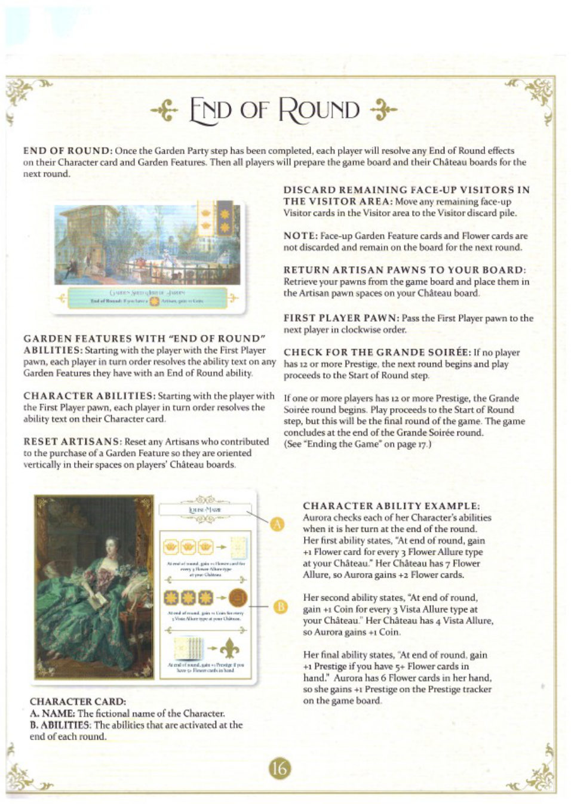
14游戏结束
游戏结束触发条件：当任意玩家达到 12 或更多声望时，游戏在最终回合（盛大晚会回合）完成后结束。
终局计分
从持有起始玩家标记的玩家开始，按顺序依次结算：
每位玩家依次结算自己拥有的带"游戏终"能力的花园景观卡上的能力文本（每次只结算 1 张）。
每位玩家每保留 8 枚金币，获得 +1 声望。
每位玩家每保留 3 张花牌，获得 +1 声望。
声望最高的玩家被宣布为盛大晚会的主人并获得游戏胜利！如果仍有平局，则在城堡板上总魅力值最高的玩家获胜。如果仍然平局，则共享胜利。
终局计分示例
游戏结束时，James 有 14 点声望。他拥有 3 张花园景观，每张都有"游戏终"能力，他逐一结算它们。
第一张花园景观的能力："如果你拥有 2 种或以上的每种魅力类型，获得 +3 声望。"James 有 2+ 的路径、景致、花卉和建筑魅力，但他的城堡只有 1 点水景魅力。因此 James 无法从该能力获得奖励。
第二张花园景观的能力："+1 声望，每拥有 3 点花卉魅力（在花园景观上）再 +1。"James 的花园景观累计有 4 点花卉魅力，因此他在声望追踪条上获得 +1 声望，总计 15 点声望。
第三张花园景观的能力："如果你拥有 4+ 花卉魅力，获得 +2 声望。"同样，James 的城堡有 4 点花卉魅力，因此该能力再次激活，他又获得 +2 声望，总计 17 点声望。
最后 James 结算剩余的金币和花牌。他有 10 枚金币剩余，获得 +1 声望（总计 18 点）。他还剩 6 张花牌，获得 +2 声望（总计 20 点）。
James 最终得分为 20 点声望。对比 Aurora 的 19 点声望，由于 James 拥有最高总声望，他被宣布为盛大晚会的主人并赢得游戏！
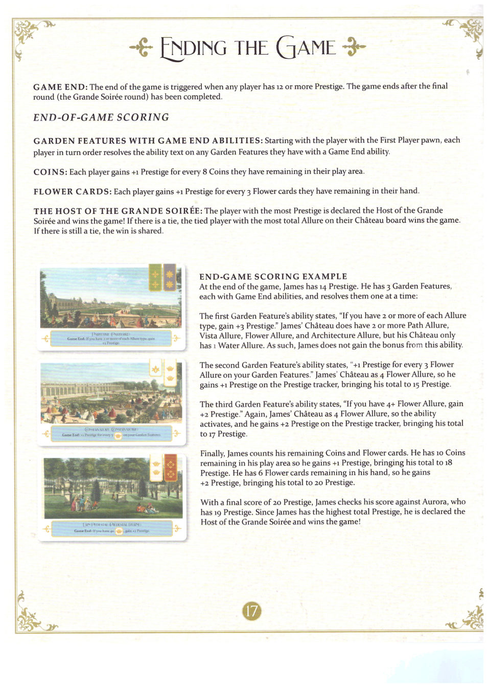
15单人模式
当你玩 La Fleur 单人模式时，你与游戏中的另一张角色卡作为对手竞技。对手会获取花牌和金币并移动其魅力标记，具体规则如下。所有未被提及的规则与正常 2 人游戏相同。
按照正常的 2 人游戏设置游戏板和你的游戏区域。此外，在你的旁边设置一块城堡板和魅力标记给你的对手。执行以下额外设置：
单人模式设置
- 角色卡：洗匀 Mademoiselle Niwa、Marie-Amélie、Louise-Marie 和 Captain George 这几张角色卡，随机选择 1 张作为你的对手。你只需使用这张卡及其起始资源（更多信息见下文）来游玩。
- 事件卡：移除带有 🔥 符号的以下事件卡：La Seine、On the Terrace、Goats、Grand Château 和 Hot Air Balloon Voyage。
- 访客卡：移除带有 🔥 符号的以下访客卡：Kai 和 Catherine。
- 花园景观卡：移除带有 🔥 符号的以下花园景观卡：Pergola。
回合顺序
你总是在第一回合先行动，之后轮到你的对手。（记得**每回合都轮换**起始玩家标记，确保你和你对手公平地轮流先手。）将所有工匠按你和你对手之间的顺序交替放置——你一次放一个，而不是与你对手一起轮流。
在你对手的回合中，它按以下方式行动：
- 将最右边的一张花牌弃入花牌弃牌堆。
- 从花园景观牌堆顶端取 1 张花园景观卡，正面朝上放在对手面前。适时结算与同伴、花园景观或工匠相关的效果（注意：与同伴、花园景观或工匠相关的奖励永远不会被对手触发计分）。你的对手不会从这张花园景观获得魅力值。
- 从花牌堆顶端抽取等同于访客区域当前访客数量的花牌，并根据各花牌上的魅力类型为对手获得相应的魅力。对每张 Wild 牌，根据**花园派对中访客**出现频率最高的魅力类型（如果并列，选择最先出现的）来获得。如果没有该魅力类型，则对手从该 Wild 牌不获得任何魅力。将这些花牌按抽取顺序（先抽先弃）弃入花牌弃牌堆，然后在你的对手的魅力追踪条上计分。
- 如果你面对的是最难级别的对手，注意他们也会从前 3 张展示的访客（或只有 2 张访客时则从前 2 张）那里获得显示的魅力值。
回合结束与下一回合开始
回合结束时，你的对手会像你和其他对手一样结算声望、花牌和金币，以及来自访客和他们自身角色能力的"回合末"/"被访问时"花园景观效果（如适用）。在多人游戏中计分。开始下一回合前，将所有花园景观卡向下滑动、所有花牌向右滑动，分别填补各自的空位。你的对手会将通过访客和角色奖励获得的花牌面朝下保留。他们永远不会收集工匠卡。
关于事件和访客的注意事项：你的对手总是会采取行动（比如花费金币或花牌来获取声望），前提是事件卡和访客卡允许他们这样做。某些事件不适用于你的对手（但你仍然可以利用它们！）对于 Notre Dame de Paris，你的对手总是获得 +1 声望。
游戏结束
一旦有 1 名玩家达到 12 或更多声望，就打出最终回合。游戏结束时，你的对手会获得花牌奖励（每 3 张花牌 +1 声望）和金币奖励（每 8 枚金币 +1 声望）来得到最终声望分数。如果你的声望更高，恭喜你赢了！你可能已经准备好挑战更高难度了（见下方挑战）。
单人难度级别
选择你的难度等级，并据此设置/游玩：
- 简单（Easier）：对手在魅力追踪条上从零开始，拥有 3 枚金币和 3 张花牌。
- 标准（Starting Level / normal）：对手从 3 枚金币和 3 张花牌开始。每回合（含第一回合），对手从出现的魅力类型中最频繁的一种获得 1 点魅力（如果并列则选最先出现的）。如有必要，抽取额外访客来获得底部没有的魅力类型，然后将多余访客放在访客牌堆底部。
- 困难（Harder）：对手从零魅力、3 枚金币、3 张花牌开始。每回合（含第一回合），对手从出现的魅力类型中最频繁的一种获得 1 点魅力（如果并列则选最先出现的）。如有必要，抽取额外访客来获得底部没有的魅力类型，然后将多余访客放在访客牌堆底部。
- 极难（Hardest）：对手从零魅力、3 枚金币、3 张花牌开始。每回合，对手也从展示的前 3 名访客（或只有 2 名访客时则从前 2 名）那里获得 1 点魅力。如果某种魅力类型不存在，你的对手不从该访客获得魅力。
单人挑战目标
想要更大的挑战？尝试按顺序完成以下场景：
- 以 20+ 声望获胜。
- 游戏结束时拥有 10+ 枚金币。
- 在最终回合触发游戏结束。
- 以恰好 2 种魅力类型获胜，且每种都达到 10+。
- 你的所有魅力类型在游戏结束时都达到 5+。
- 在游戏结束时拥有 6 个或更少花园景观。
- 在游戏结束时手中有 7+ 张花牌。
- 以 30+ 声望获胜。
- 在游戏结束时只拥有 2 名工匠。
- 全程不激活角色的任何能力而获胜。
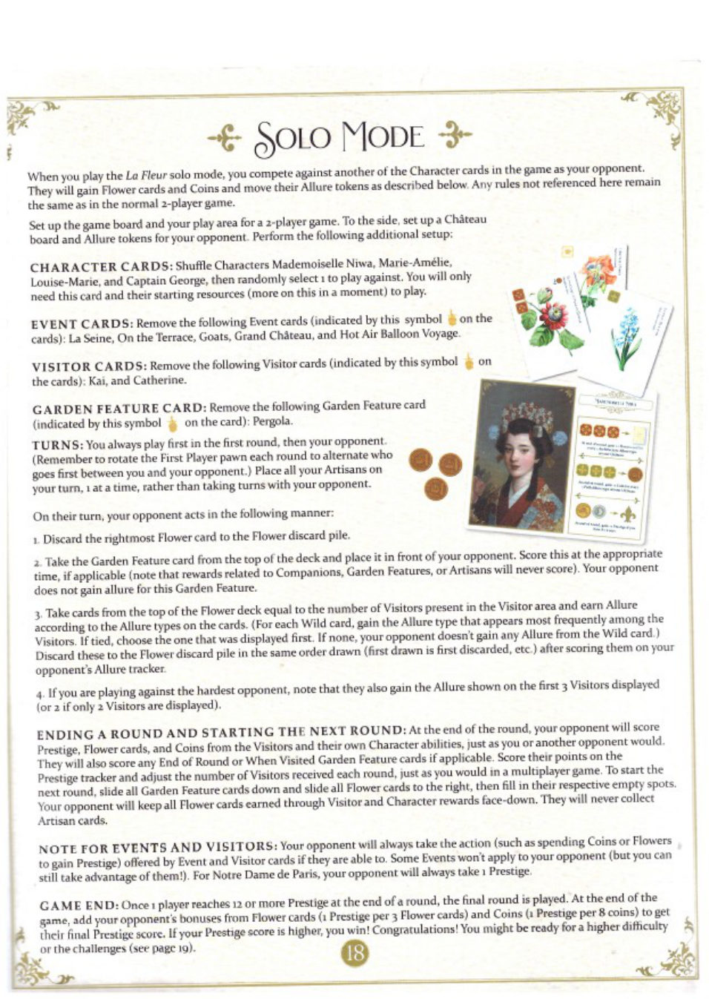
制作人员
游戏设计（Game Design）：Amy and Dusty Droz
游戏开发（Game Development）：Amy Droz, Dusty Droz, and Aaron Kemp
单人模式设计（Solo Mode Design）：Joe Slack
规则编辑（Rule Editing）：Christina Doka and William Niebling
美术（Art）：大部分美术素材来源于公共领域（Public Domain），来自作品起源国及其他国家/地区，版权期限为作者寿命加 70 年或更长。附加艺术由 Elizabeth Wakou 提供。部分洛可可风格图片由 Trillium Rare Prints 提供。
致谢：衷心感谢我们所有的 Kickstarter 支持者！没有你们的大力支持，我们就不会有今天。我们对你们感激不尽，也很荣幸能为大家设计游戏！
这款游戏在历史上准确吗？ La Fleur 是一部虚构作品。游戏中的大部分美术素材来自洛可可时期的历史艺术品。然而，角色和访客的姓名、故事、事件以及游戏中的其他内容都是我们的奇思妙想和想象力的产物。游戏中的任何历史不准确之处都是由于从 18 世纪获取公共领域美术资源的限制造成的，我们并不声称这些人物或场所与真实历史人物有任何关联或联系。花牌的通用名和学名尽可能准确地反映了当时植物学认知的发展，同时也考虑了原始艺术家捕捉其相似之处时的不一致性或艺术许可。
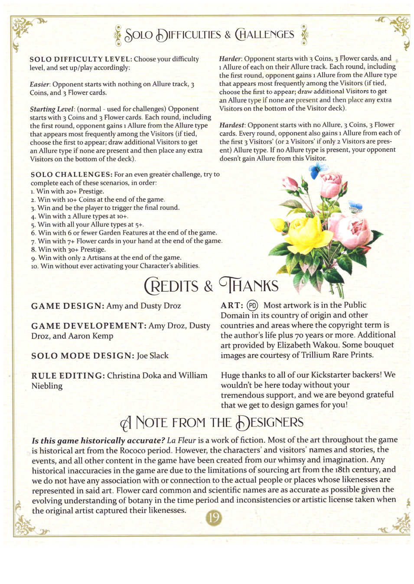